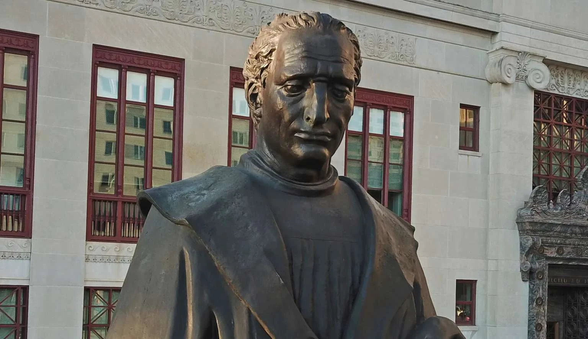

WASHINGTON EXAMINER ·
Christopher Columbus and the birth of modern human rights
Read the original
Across the country, statues of Christopher Columbus, the Genoese navigator who first colonized the Indies in the name of Spain’s Catholic monarchs, are being vandalized and torn down. Most recently, it was announced that the statue of Columbus that stands in front of Columbus, Ohio’s City Hall will be removed and replaced with a commissioned piece representative of diversity and inclusion.
“For many people in our community, the statue represents patriarchy, oppression, and divisiveness,” said Columbus Mayor Andrew Ginther, adding, “now is the right time to replace this statue with artwork that demonstrates our enduring fight to end racism.”
Echoing the voices calling for the removal of Columbus’s likeness in public spaces across the country, City Council President Pro Tempore Elizabeth Brown tweeted, “Christopher Columbus led the brutalizing and murder of indigenous people in this hemisphere.”
But there’s more to this story that should be remembered. While Columbus’s “discovery” certainly led to unjustifiable atrocities and the death of millions of natives, it also provoked what is arguably the first international human rights debate in recorded modern history.
On the Sunday before Christmas of 1511, nearly two decades after Spain’s annus mirabilis of 1492, a voice cried out from the wilderness of the “New World” in defense of the indigenous peoples who were being killed and enslaved by the conquistadores. In a fiery sermon, Dominican friar Antonio de Montesinos asked his countrymen, “Tell me, by what right or justice do you keep these Indians in such a cruel and horrible servitude? On what authority have you waged a detestable war against these people, who dwelt quietly and peacefully on their own land?”
These questions quickly reached the halls of the great Iberian universities and even the court of King Ferdinand II, who convened a commission that would ultimately pass the Laws of Burgos, a code of ordinances intended to protect indigenous people and protect them from enslavement.
Similarly inspired, Pope Paul II issued a bill titled Sublimis Deus in which he declared that the natives were fully human, had souls, and had a natural right to property.
But it was the Hispanic Schoolmen from Salamanca who would bring this debate to the forefront of Western intellectual tradition. By reviving and reimagining Thomas Aquinas’s understanding of natural law, connected to the second part of his Summa Theologiae, Catholic scholars, such as Francisco Suarez, Luis de Molina, and Francisco Vitoria, were able to construct a vision of an ius gentium in which the right to enslave non-European human beings was questioned.
Throughout their exploration of the Summa Theologiae, the Schoolmen concluded that law should be treated as something created by reason and revelation and not simply as a construct of the will. Natural law, therefore, was binding on all humanity and “its principles applied to mutable situations and different peoples” as God was indirectly the author of all human laws.
A notable example of this work applied to the politics of the New World was Vitoria’s 1539 De Indis, in which he showed that the natives were “true masters” (veri domini) of their own property, even if they were unbelievers. There, Vitoria showed the School of Salamanca’s characteristic willingness to challenge convention by refuting Aristotle’s understanding of the property rights of barbarians. He dismissed the conquistadors’ traditional “argument from sin” on the ground that sin does not cancel an individual’s natural right to property.
Of equal note, in De Iure Belli, Vitoria challenged the theological grounds by which the king or the pope could wage war against the natives. As my friend Professor Thomas Izbicki notes:
Vitoria rejected the idea that either the emperor or the pope is master of the world. He denied that Emperor Charles V could take away the domains of others. He cited Juan de Torquemada’s Summa de ecclesia to prove that the pope’s supremacy was spiritual, not temporal; and he maintained that the pope could not force unbelievers to convert. According to Vitoria, discovery was not a justification for conquest; and he refuted the view that sins against nature like cannibalism and incest, which were exceptions to the natural immunity that canon law allowed to non-believers, justified conquest. There were sinners in every nation, but the pope was not entitled to wage war against Christians who were guilty of sin. Furthermore, neither the alleged voluntary choice of the Amerindians nor the idea of a gift from God could justify the conquest of their territory.
Ultimately, it became a consensus amongst the majority of the Hispanic Schoolmen that war could not be waged against non-Christians by reason of infidelity and that violence was only justified in self-defense.
These ideas would ultimately influence the likes of John Locke and the Founders and their understanding of natural rights. Although not perfectly implemented, these ideas are the guiding principles of all Western constitutions, including our own. A prime example of this is the 1948 Universal Declaration of Human Rights, which recognized the inherent rights of individuals and mandated their protection.
The ideas born in the years following Columbus’s landing in the Bahamas are particularly important and should, today, more than ever, be celebrated. While the atrocities committed can never be justified, they did lead to a universal understanding that all lives have inherent value, regardless of race or creed.